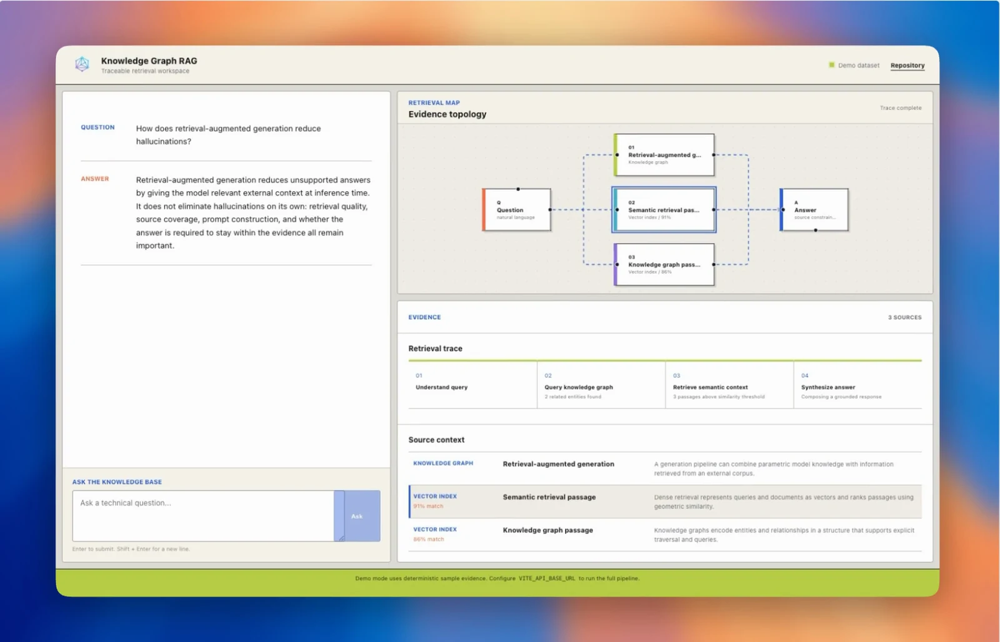
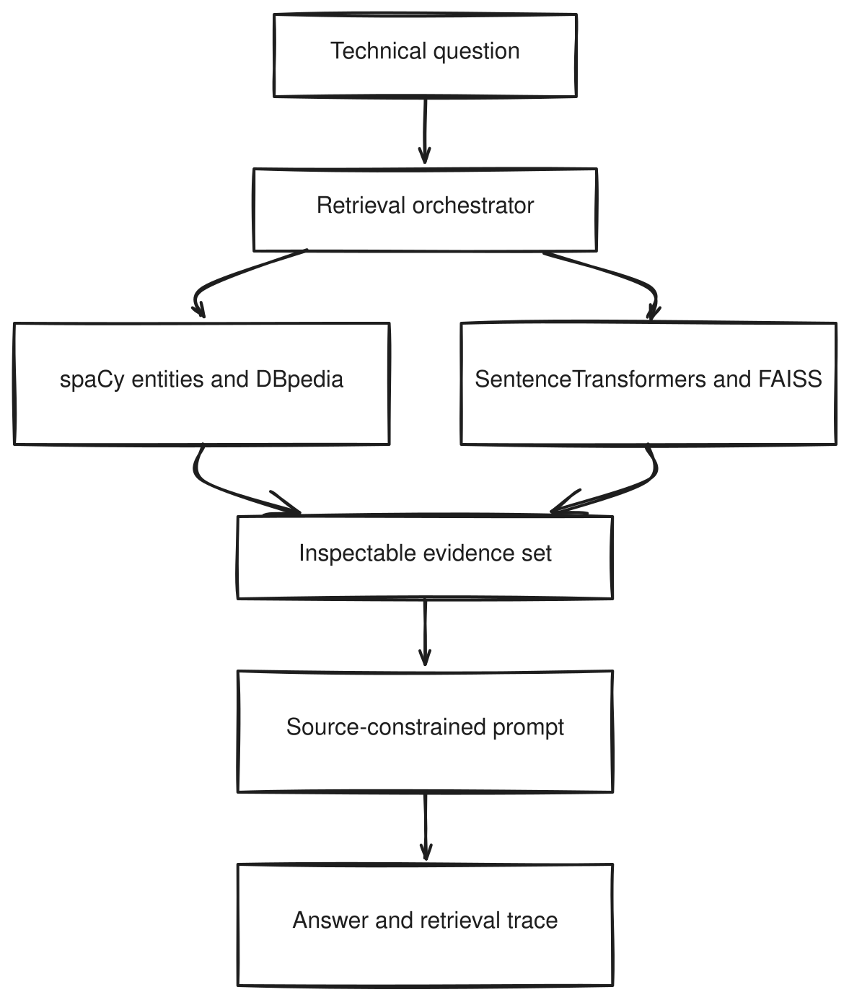

A two-path retrieval system that augments vector search with structured entity context before response generation.
Abstract
Retrieval-augmented generation conditions a language model on information retrieved from an external corpus. This report presents KG-RAG Assistant, a senior capstone application that combines two retrieval paths: dense vector search over more than 10,000 Wikipedia articles and structured entity context from DBpedia. The system also supports a replaceable collection of PDF class notes to demonstrate retrieval over private or domain-specific material.
A React interface communicates with a FastAPI backend, where spaCy processes the question, SentenceTransformer encodes it, FAISS retrieves semantically similar text, SPARQL queries DBpedia for the first recognized entity, and an OpenAI model synthesizes the resulting context. The team packaged the frontend and backend with Docker and exercised the implementation through unit, integration, functional, performance, and client-acceptance testing.
Video
Knowledge Graph RAG Assistant
The dense path encodes text with all-MiniLM-L6-v2, normalizes embeddings, and performs exact inner-product search with FAISS IndexFlatIP. Results below the configured similarity threshold are discarded.
The structured path uses spaCy to find the first named entity and constructs a SPARQL query for an English DBpedia abstract. Both contexts are supplied to the final response-generation prompt.
Engineering Evaluation
The project was evaluated as a software-engineering prototype through unit, integration, functional, performance, and client-acceptance testing. All representative cases documented in the final report passed.
For the prompt “Who is Alan Turing?”, the final three recorded runs averaged 7.615 seconds end to end. Because the report did not preserve hardware, variance, warm-up policy, network conditions, and complete runtime metadata, this is a historical engineering measurement rather than a reproducible benchmark.
Limitations
Answer quality was not benchmarked on a fixed dataset. The project did not evaluate exact match, factuality, citation correctness, retrieval recall, or human preference, and therefore does not establish an accuracy advantage from knowledge-graph augmentation.
Entity processing uses the first spaCy entity and an exact English label in SPARQL. Questions with multiple entities, aliases, ambiguous names, or complex relations can return no context or the wrong resource.
Acknowledgements
The team thanks Vikas Aditya of HackerEarth for weekly technical feedback and mentorship, and Dr. Parteek Kumar for guidance throughout the capstone development and documentation process.
Paper

@techreport{iverson2025knowledgegraphrag,
title = {RAG Application Using Knowledge Graph and Vector Search},
author = {Iverson, Molly and Villalovoz, Ethan and Juego, Chandler and Shtrikman, Adam},
institution = {Washington State University},
type = {Senior Capstone Report},
year = {2025},
url = {https://knowledge-graph-rag.github.io/}
}